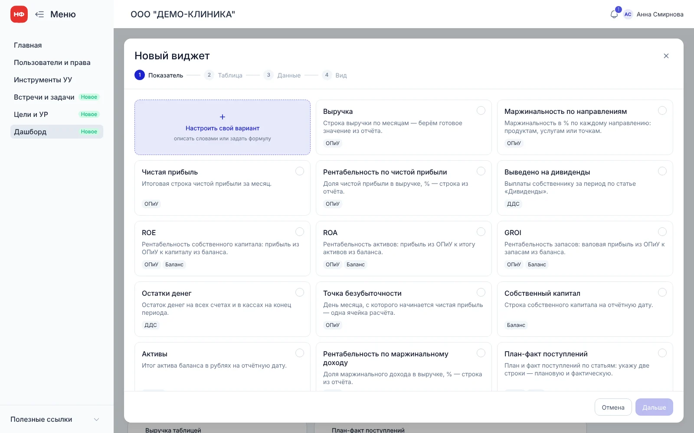
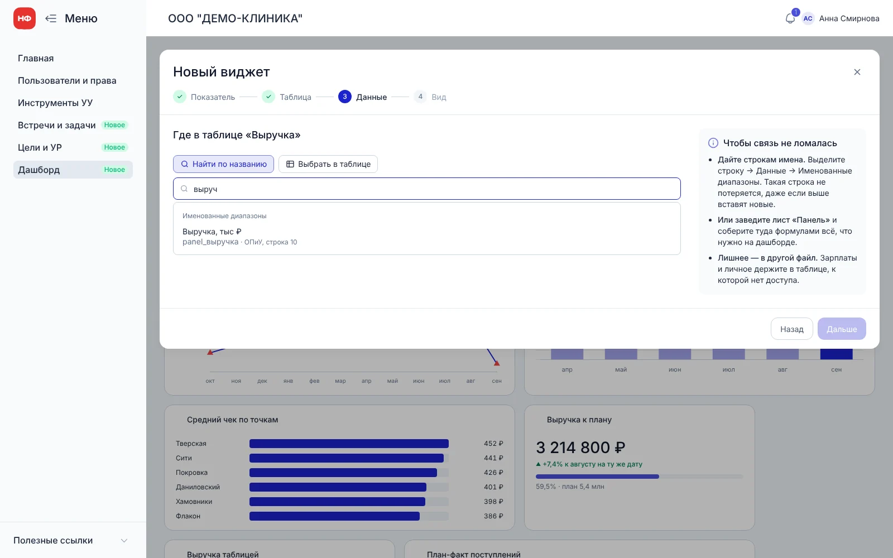
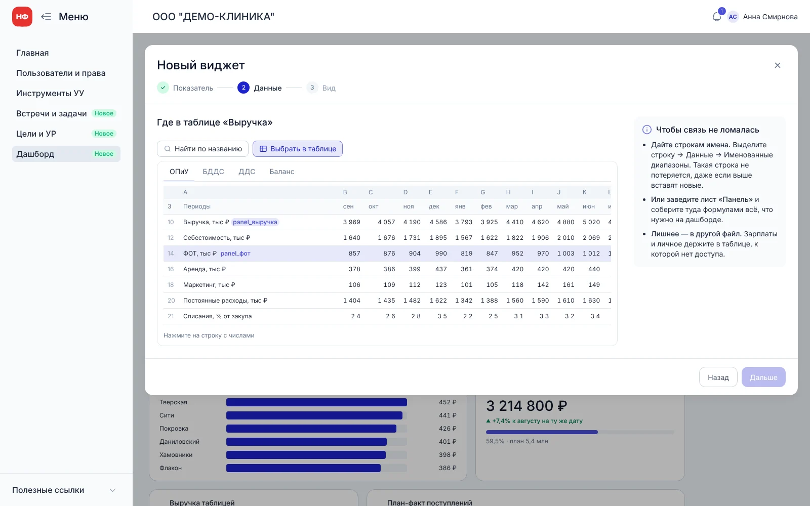
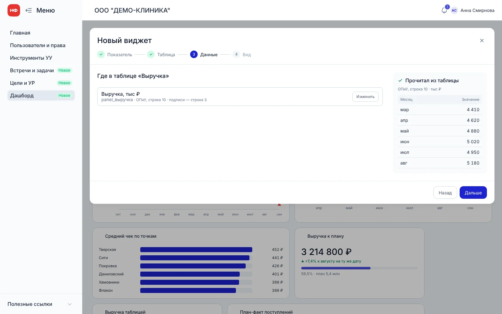
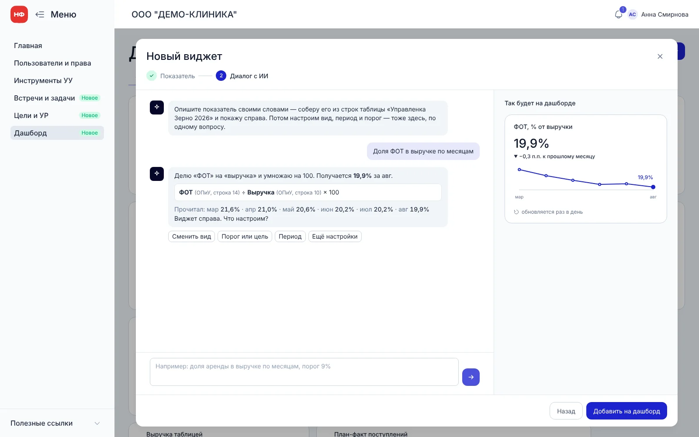
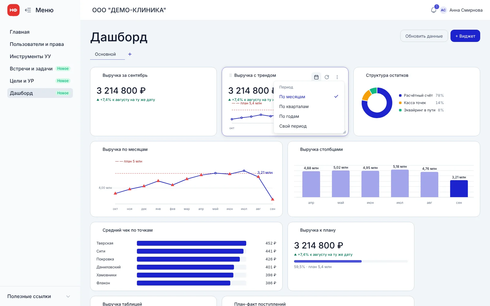
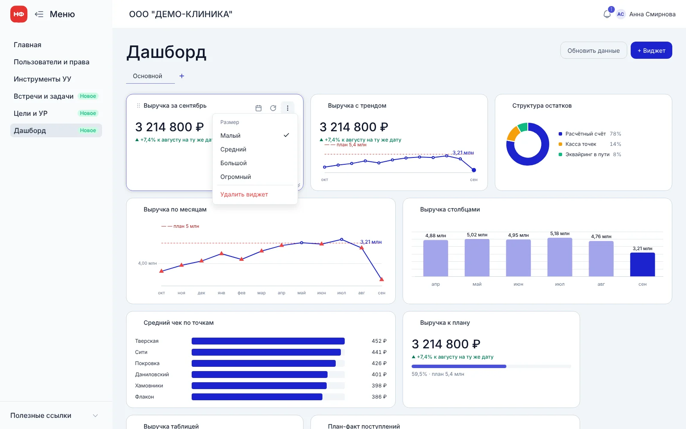
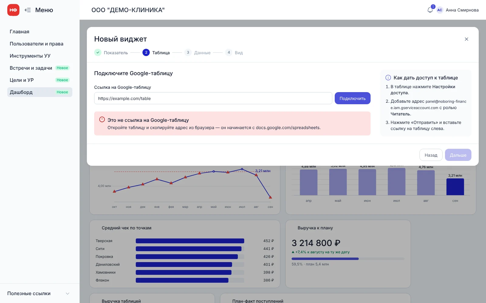

Дашборд удваивает жизнь клиента, но каждый собирают вручную
Дашборд собирает финансовый директор (ФД), у которого десятки клиентов. Живёт он в кабинете клиента, рядом с инструментами, встречами и задачами: собственник и его команда смотрят его каждый день, часто с телефона, и могут сами добавить виджет. Чем дороже сборка, тем меньше клиентов получают дашборд — и тем меньше эффект на срок жизни.
Любое продуктовое решение сервиса сводится к трём North Star-метрикам:
Как было
- Каждый ФД сам собирал графики к ежемесячной презентации отчётности. Показали на встрече — и к следующей всё собирай заново.
- Собирали в Excel, единицы — с помощью нейросетей.
- Всё разрознено и в разных стилях: как у кого получится.
Ограничение: данные клиента не уходят в нейросеть. ИИ участвует только в составлении формул — подсказывает, какие строки взять и как их посчитать. Виджет собирает и показывает фронтенд, цифры остаются у нас.
Добавить виджет так же просто, как выбрать показатель
Я исходил из того, что конструктором будет пользоваться не только ФД, но и собственник бизнеса без опыта в таблицах. Значит, в нём нужно разобраться с первого раза. Отсюда три принципа — один шаг на одно решение, минимум контролов за раз, линейный сценарий без отдельных окон.
Что показали встреча с командой, дашборды ФД и три аналога
Исследование было кабинетным: встреча с командой 18 сентября, разбор дашбордов, которые ФД делают клиентам, и бенчмарк Databox, Geckoboard и Klipfolio. Интервью с ФД и клиентами не проводил — гипотезы проверим на юзабилити-тестах.
Пять способов связать виджет с таблицей
Главный вопрос — как сервис поймёт, из какого места таблицы брать цифру, и кто отвечает, если она окажется неверной. Я разделил две вещи: как хранится связь и как ФД её находит. Хранится всегда одинаково — ссылка на конкретную строку таблицы. А найти строку можно несколькими путями.
| Способ | Что делает ФД | Что хорошо | Что плохо | Решение |
|---|---|---|---|---|
| Сервис сам разбирает таблицу | Проверяет, что сервис нашёл всё верно | Ничего не нужно искать | У каждого ФД своя таблица — каждая новая ломает разбор. За ошибку в цифре отвечаем мы | Отказались |
| Координаты клеток | Пишет адрес вроде «лист ОПиУ, клетки B10–G10» | Просто сделать, ошибки понятны | Вставили строку — адрес указывает уже не туда. Собственнику такое не объяснить | Запасной вариант |
| Имена у строк | Один раз даёт строке имя, например «выручка» | Строку находим, даже если таблицу перестроили | Таблицу нужно один раз подготовить | Показываем первыми в поиске |
| Отдельный лист для дашборда | Собирает лист по шаблону | Самый надёжный вариант; лишнее, например зарплаты, туда не попадает | Кажется, что просят переделать таблицу | Советуем в подсказке |
| Поиск по названию и выбор в таблице | Пишет «выруч» или кликает по нужной строке | Спрашиваем, что показать, а не где это лежит | Сервису нужно прочитать названия строк | Выбрали |
ИИ здесь только помогает определить, какие строки взять и по какой формуле посчитать. Доступа к цифрам и другим чувствительным данным у него нет, а итоговая связь всегда явная и проверяемая.
Виджет за четыре шага: один вопрос на шаг
Каждый шаг отвечает на один вопрос: что показать, откуда взять, как нарисовать. Нестандартный показатель добавляется по тому же сценарию, только последний шаг — диалог.
Спрашивать показатель, а не адрес
Первый шаг — плитки стандартных показателей: выручка, чистая прибыль, остатки денег, план-факт. Человек выбирает, что хочет видеть, а не где это лежит. Первой стоит плитка «Настроить свой вариант».

Одно поле поиска вместо пяти селектов
На шаге «Данные» одно поле. Пишешь «выруч» — сначала именованные диапазоны, потом строки со всех листов. Подписи периодов и единицы находим сами. Кто не помнит название, переключается на «Выбрать в таблице» и кликает по строке. Подключение Google-таблицы — отдельный шаг, но только для первого виджета: дальше этот шаг пропускается.


Прочитанные цифры видны сразу
Как только строка выбрана, справа видны цифры по месяцам — сразу понятно, те ли это данные, без отдельной проверки. Пока строка не выбрана, на этом месте подсказка, как сделать связь с таблицей устойчивой.

Свой виджет — диалогом в том же сценарии
Нестандартный показатель собирается по тому же сценарию, только последний шаг — диалог с ИИ: слева чат, справа результат. Вид, порог и название меняются словами или чипсами. ИИ видит только названия строк и составляет формулу, а считает и рисует виджет фронтенд — цифры клиента в нейросеть не уходят.

Настройки и период — на самом виджете
Всё, что меняют после создания, живёт на карточке виджета: период (по месяцам, кварталам, годам или свой), обновление данных, размер и удаление. Это привычный набор для виджетов в аналитических сервисах — учить новый паттерн не нужно, а добавление виджета остаётся коротким. Сравнение всегда с прошлым периодом того же шага.


Вкладки под каждую роль
У клиента бывает большая команда с разными ролями, и каждому важно своё. Поэтому дашборд делится на вкладки: ФД собирает свою со своими показателями, финменеджер клиента — свою, собственник — третью. Каждый смотрит только то, что важно ему, и не листает чужие виджеты.
Клиент не должен увидеть пустой виджет
Таблица принадлежит клиенту: он может закрыть доступ или перестроить файл. Поэтому каждая ошибка говорит, что случилось и как починить. Если адрес съехал, виджет показывает последнее удачное значение с бейджем «данные от 19 сентября», а в настройках предлагает «Взять строку 21».

Онбординг вынес в отдельную версию прототипа, чтобы на тестах сравнить две группы: с примером дашборда и демо сценария и без них. Версия с онбордингом ↗
Прототип с настоящей логикой вместо макетов
Вместо статичных макетов я собирал в Claude кликабельный HTML-прототип в Noboring DS. В нём работает то, что в Figma пришлось бы рисовать десятками состояний: поиск по демо-таблице за 12 месяцев, пересчёт по кварталам, формулы своих виджетов, диалог с ИИ. Такой прототип можно давать респондентам, а разработчики берут его как основу ТЗ.
Так прошла каждая итерация — больше 15 версий за 2 дня.
Прототип в разработке, метрики будем собирать
Цифр «до / после» пока нет: сначала юзабилити-тесты двух версий, потом замер после запуска.
| Метрика | Где смотрим | Гипотеза |
|---|---|---|
| Доля добавивших виджет без помощи | Тесты, задание «добавьте выручку» | H1 |
| Время до первого виджета | Тесты и продуктовая аналитика | H1, H3 |
| Доля своих виджетов, собранных в диалоге | Продуктовая аналитика | H2 |
| Разница с онбордингом и без | Тесты на двух группах | H3 |
| Доля клиентов с дашбордом и их срок жизни | После запуска | North Star |
Открытые вопросы. Где граница между «читаем названия строк» и «разбираем таблицу». Как переносить настройку дашборда между клиентами — у ФД их десятки. Мобильная версия — отдельной задачей.
Что сделал я
- Разобрал дашборды ФД и три сервиса-аналога, сформулировал гипотезы.
- Сравнил пять способов связать виджет с таблицей и предложил отказаться от разбора таблицы.
- Заложил ограничение: ИИ составляет только формулы и не получает данные клиента.
- Спроектировал пошаговый сценарий добавления виджета, поиск строки и выбор в таблице.
- Придумал сценарий своего виджета через диалог с ИИ внутри общего сценария.
- Продумал граничные состояния: нет доступа, съехавший адрес, пустой поиск.
- Собрал в Claude две версии прототипа и автотест всего сценария.